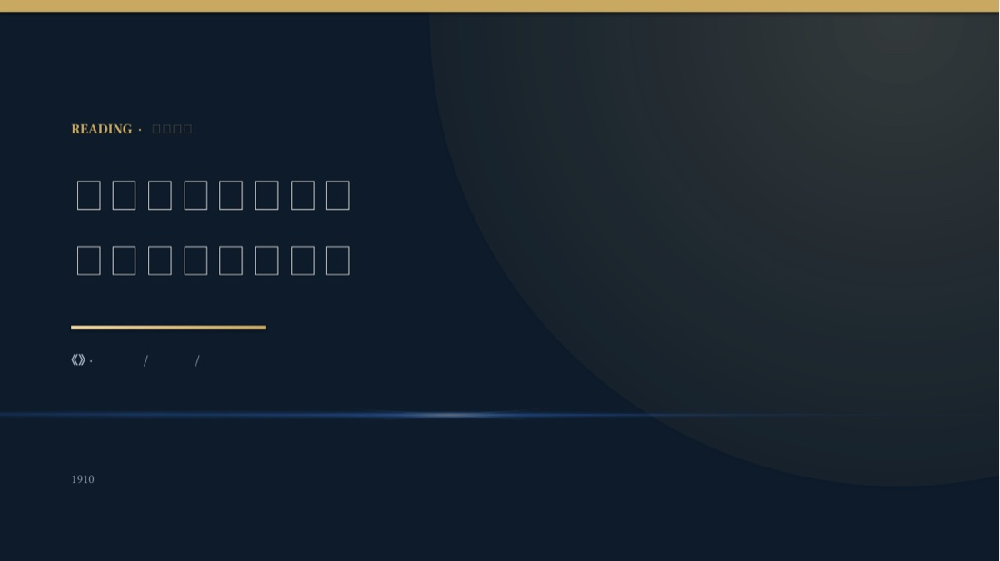
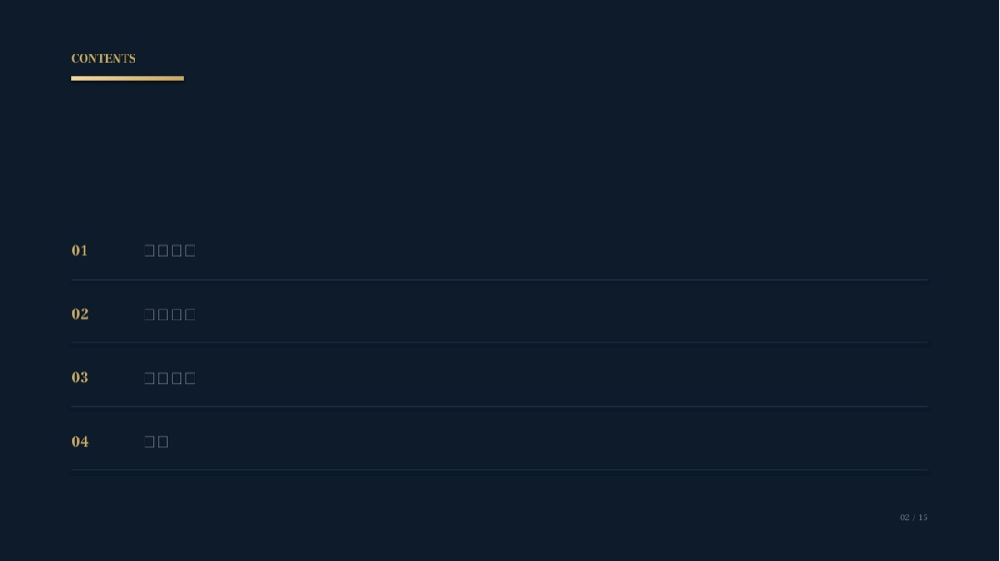
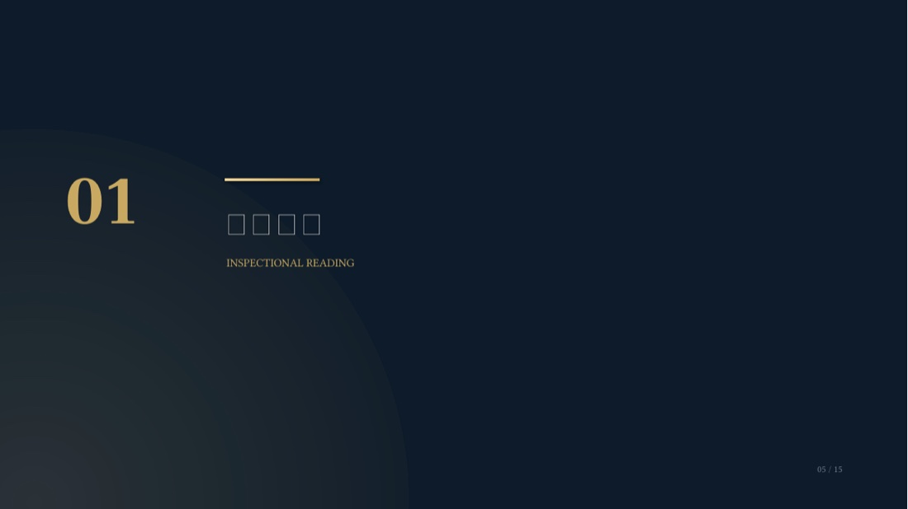
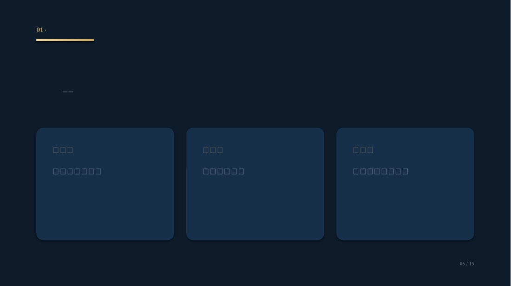
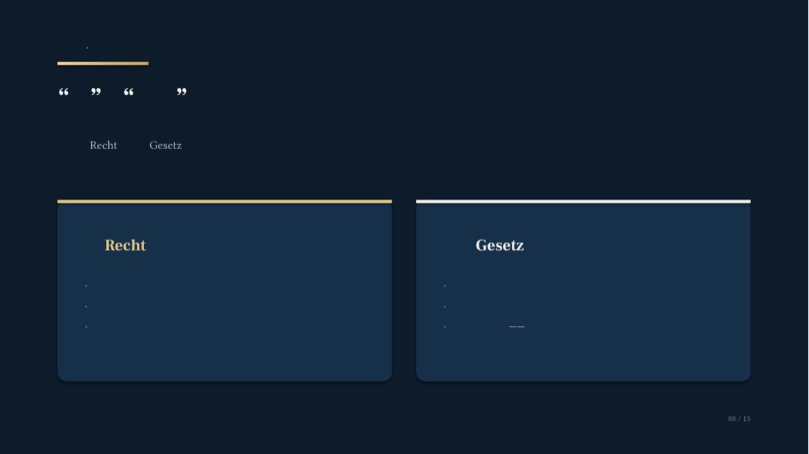
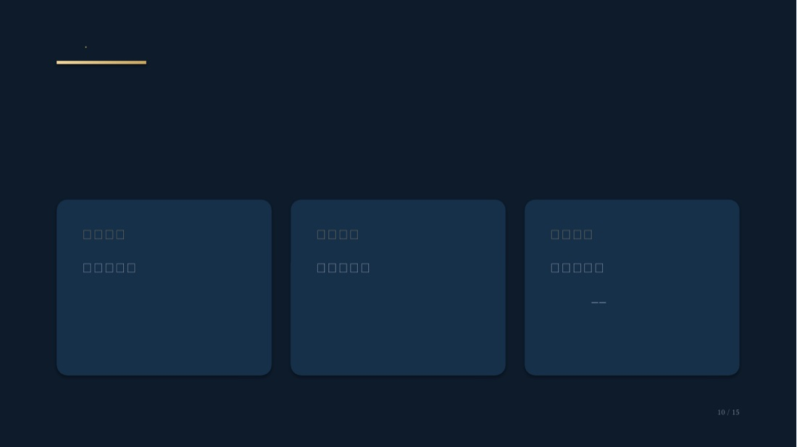
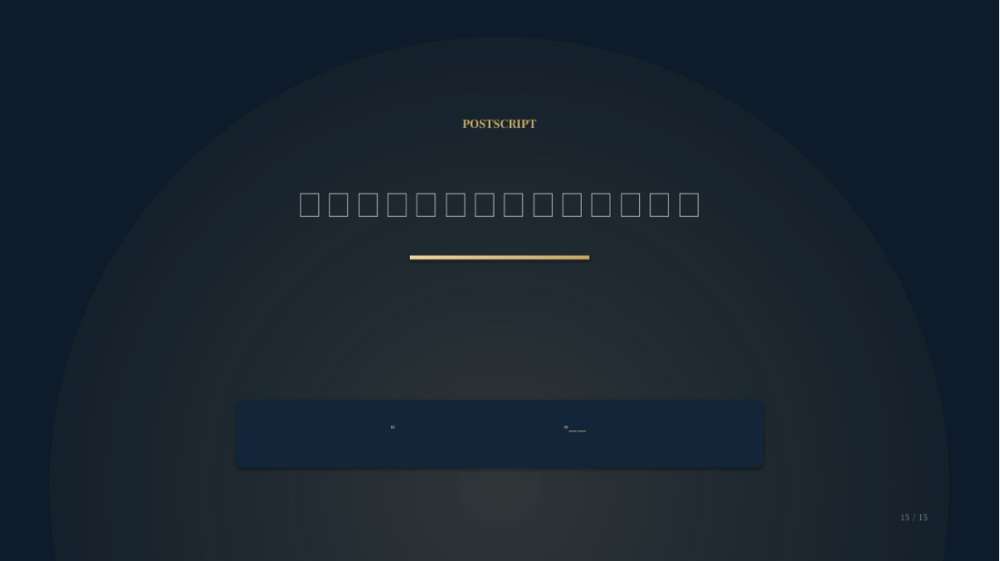

作品页选
Selected Slides






版式不是装饰，是把话说清楚的手段。
做通知、排名单、出宣传物料，本质上都是同一件事：让信息一目了然、不出差错。这套方法，我可以直接用在人事组的日常工作里。
Presentation Design · Reading Notes
《法学导论》读书分享 · 15 页一镜到底
先把书读成一条线——检视阅读、分析阅读、主题阅读；再把这条线排成一套页面。叙事骨架定了，版式才有依据：每一页只讲一件事，用层级、留白与配色把读者的视线引到该看的地方。这是我做 PPT 的固定方法。







做通知、排名单、出宣传物料，本质上都是同一件事：让信息一目了然、不出差错。这套方法，我可以直接用在人事组的日常工作里。